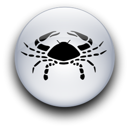
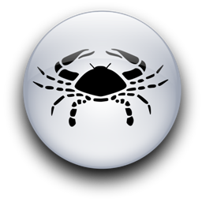

Женщина Рак и Мужчина Козерог
-

 

Когда женщина-Рак думает о будущем, у нее на уме три "Д". У нее есть три мечты, и она загадывает желания при каждом удобном случае. Постепенно мечты превращаются в цели. Порядок может быть любой, но смысл остается неизменным:
дом - дети - деньги дети - деньги - дом деньги - дом - дети дом - деньги - дети дети - дом - деньги деньги - дети - дом.
Вот все шесть вариантов. Ее потребности немного отличаются от ее целей, и это три "С". Их порядок неизменен, но все они одинаково необходимы для счастья:
сочувствие - спокойствие - стабильность. Знаете, что так привлекательно в "лунной" женщине? Хотя она и ждет от каждого знакомства три "С", и в голове у нее при этом неизменные три "Д", ей так хочется сделать своего мужчину действительно счастливым. И она может быть самой сочувствующей и нежной, самой верной и надежной из женщин. Когда она проявляет свои лучшие качества, когда она преданна и, более того, терпелива, лучшей подруги для мужчины-Козерога действительно не найти. Женщина-Телец тоже терпелива, но ей трудно приспосабливаться. Женщина-Близнецы легко приспосабливается, но не очень терпелива. Зато у "лунной" леди в характере и то, и другое, и это достойно восхищения. Что касается преданности, многие женщины преданны своим любимым, но не в такой степени, как она. Ценитель домашнего очага, Козерог будет счастлив увидеть, что значит для нее семья.
В женщине-Раке всегда есть что-то беспомощное, и Козерог ощущает это, как никто другой. Этой женщине нужен сильный мужчина, на которого можно опереться, кто-то, кто сумеет отмести все ее заботы и страхи и кто великодушно позволит ей время от времени поплакать на его плече. Но она не так беспомощна, как кажется. Рак - это кардинальный знак лидерства. Женщина Луны попытается мягко, ненавязчиво, оставаясь на заднем плане, все-таки влиять на мужчину, в которого влюблена. Если же она не влюблена, она может продемонстрировать большое честолюбие и сделает что угодно, чтобы достичь вершины. Конечное каждая женщина-Рак втайне ищет в мужчине надежность. Козерог именно такой: он честолюбив не меньше, чем она, и умеет добиться успеха. Собственно говоря, он почти образец всего, о чем она мечтала, но чего не сумела достичь, потому что слишком ранима. С другой стороны, в ней он обнаружит все те "лунные" качества, которые он втайне хотел бы назвать своими, но у него так не получится, потому что он недостаточно чувствителен. Следовательно, почти с первого момента их встречи они безошибочно высоко оценят друг друга, а это одна из самых прочных основ любви.
Мужчина-Козерог часто консервативен и почти всегда стремится быть главным. Женщина-Рак не возражает против первого, поскольку сама довольно консервативна. Что же до второго, она не станет выносить этого ни в чем, кроме любви. Когда она влюблена, она позволяет ему принять желаемое за действительное, но постепенно может забыть, что всего лишь играет роль, и принять позицию подчиненного, что совсем неплохо! Ведь если и есть мужчина, который способен и на лидерство, и на нежность одновременно, то это именно он. Так что обычно все складывается самым благоприятным образом. Обычно этот мужчина не одобряет теорию "свободного брака". В этих вопросах он консервативен, хотя иногда делает вид, что это не так. Он глубоко убежден, что место женщины дома. Даже если он позволит своей жене работать, то лишь до того момента, когда у них появятся дети. Если он типичный Козерог, то он считает, что место матери с ее детьми, по крайней мере, пока они маленькие. Ему также не понравится любое слишком свободное обращение с деньгами. Даже если его "лунная" леди зарабатывает сама, он все равно захочет распоряжаться деньгами, чтобы не допустить расточительности.
Он будет объяснять ей, сколько денег нужно отложить из их общих доходов и какое помещение капитала будет самым выгодным. Поскольку он принадлежит к стихии Земли, он, вероятно, считает, что недвижимость или земля - самое надежное вложение с перспективой на будущее.
Ему понравится ее отношение к вещам. Козерог твердо верит, что всему на свете можно найти практическое применение и не следует выкидывать ничего, что хоть на что-то годится. Если она типичный Рак, с готовностью согласится с этой философией.
Женщина-Рак легче, чем многие другие, приспособится к самоуглубленности мужчины-Козерога, к его привычке заботиться о деле и поступать благоразумно. Но ей будет трудно понять, почему он так не любит перемены, ведь ею управляет непостоянная Луна, ей так нужна смена событий и впечатлений! Убедить его в том, что их жизнь была бы богаче, если бы они не сидели на одном месте слишком долго и не придерживались бы всегда одних и тех же идей, будет довольно трудно. Этот мужчина, как бы он ни старался, никогда не сможет полностью избавиться от ограничений Сатурна, влияющих на его характер. Где-то внутри даже, казалось бы, экстравертного Козерога, все равно сидит серьезный старик Сатурн... Тень консерватизма у некоторых Коз может выцвести до пастельных тонов, но никогда не исчезнет до конца. Да, он может быть любящим, нежным, мягким, деликатным, капризным и забавным, каким угодно. И все равно им управляет Сатурн, и от этого не уйти никуда.
В любви он может быть разным: откровенно эротичным и чувственным, мягким и нежным. Но мы все-таки говорим о типичном Козероге, а он не станет искать приключений вне дома, и ему свойственно постоянство. Она тоже хочет надежных длительных отношении, даже если путь к ним оказывается долгим и не всегда простым. Несомненно одно: эта женщина придаст их любви особую прелесть. Козерог способен на глубокое и сильное проявление страсти, но ему может недоставать чувственного воображения или трепетного экстаза. "Лунная" леди украсит их близость этими новыми для него качествами, и он будет трогательно благодарен ей за просвещение. Его сила, верность и надежность его любви позволят ей довериться ему, не боясь обиды, непонимания или непостоянства. Он может дать столь нужную ей эмоциональную надежность, а, она подарит ему тонкость и романтичность, и спустя какое-то время, когда они лучше узнают друг друга, их соединит надежная, прочная и звенящая, как струна, нить земной любви.
Мужчины-Козероги бывают иногда очень эгоистичны и умеют использовать людей, не обращая внимания на их чувства.
Когда "лунная" женщина перестанет жалеть себя и вместо этого будет больше думать о своем любимом-Козероге, она увидит всю глубину и великолепие, всю силу его эмоций - и его неспособность раскрыться. Ей надо помочь ему сделать это, потому что нет любви прочнее и прекраснее, чем любовь Козерога, который ждет на вершине, чтобы одарить ту, у кого хватит отваги и терпения пройти этот путь. Это трудный подъем, на котором много скалистых уступов... Но только там, наверху, понимаешь, что такое счастье. Сатурн испытывает сурово, но всегда вознаграждает.